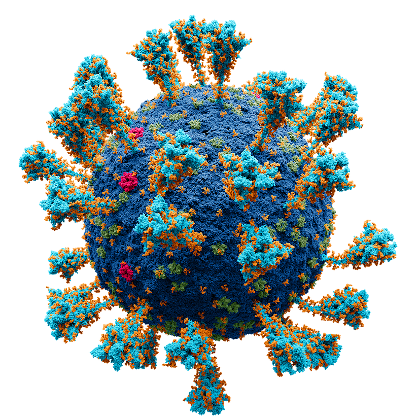
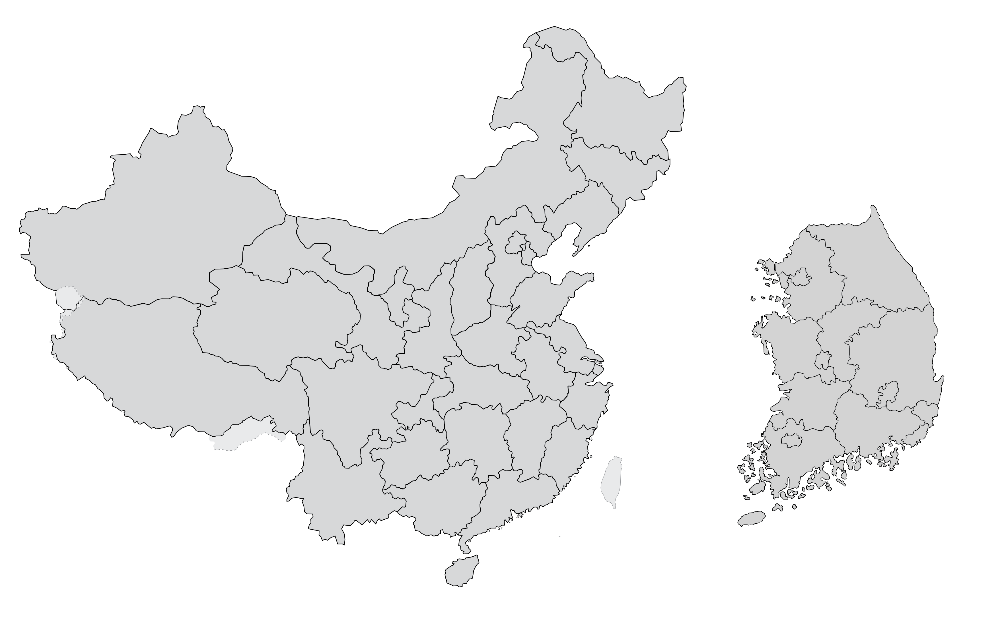
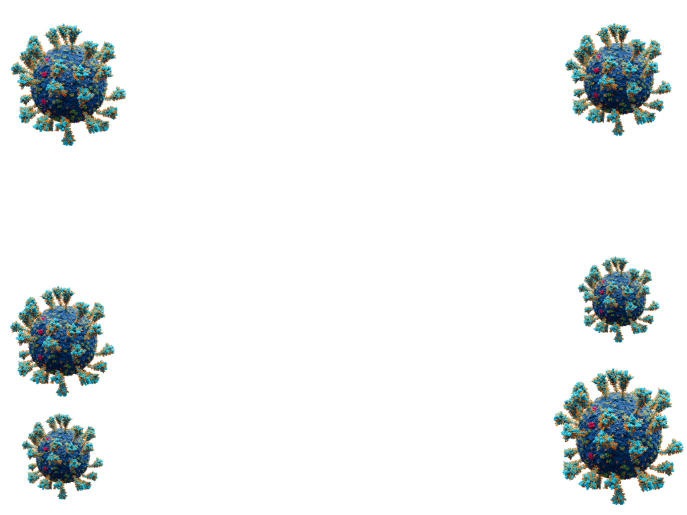
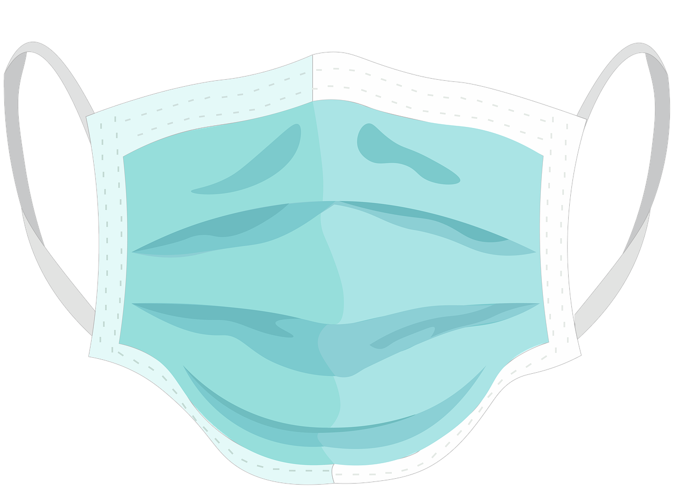

중국 후베이성 우한에 사는 A 씨(35).
출국을 하루 앞두고 발열, 오한 등 감기 증상이 나타났다.
시내 병원에서 진료를 받고 감기약을 처방받았다.

코로나19 국내 발생 1년 반,
무슨 일이 있었나
2020년 1월 18일


우한
인천국제공항
인천의료원
1월 19일 오전.
A 씨는 우한 공항에서 한국 인천으로 가는 비행기를 탔다.
가족 2명, 친구 가족 3명 등 5명이 동행했다.
일본 여행을 가기 위해 인천에서 환승하는 일정이었다.
1월 19일 오후 12시 25분
비행기에서 내린 A 씨가 인천공항 탑승동 게이트로 향했다.
체온을 쟀는데 38.0도가 나왔다.
여기에 발열, 오한, 근육통, 콧물 증상이 있었다.
검역당국의 판단에 따라 A 씨는 임시격리실로 이동했다.
1월 19일 오후 3시경.
A 씨는 검역관과 임시격리실을 나와 공항 1층으로 나갔다.
건물 앞에 대기 중이던 구급차로 인천의료원에 이송됐다.
1월 20일 오전 8시.
A 씨는 코로나19 확진 판정을 받았다.
20일 오전 A 씨가 코로나19 확진판정을 받자 정은경 질병관리본부장(현 질병관리청장)은 이날 오후 긴급 브리핑을 열었다. A 씨는 국내에서 확인된 첫 코로나19 환자였다. 방역당국은 감염병 위기경보 수준을 '관심'에서 '주의'단계로 상향 조정했다.
당시만 해도 코로나19에 대해 알려진 정보가 거의 없었다.
초기 중국 후베이성 우한을 중심으로 코로나19가 발생했을 때만 해도, 중국 보건당국은 "사람 간 전파가 이뤄진 근거가 없다"고 했다. 그러나 중국 내 확진자가 계속 늘자 '사람 간 전파'를 처음으로 인정했다.
이날 정 본부장은 “신종 코로나바이러스의 전염력은 상황을 지켜봐야겠지만 제한된 범위 안에서 가족 간 전염도 가능하다고 본다”고 설명했다. 세계보건기구(WHO)도 트위터를 통해 “가까이 접촉했을 때 발생하는 제한적인 사람 간 전염일 것”이라고 밝혔다.
그 후 1년 반이 지났다.
코로나19는 아직도 진행 중이다.
지난한 코로나19와의 싸움을
끝낼 수 있는 무기는 '백신'이다.
8월 2일 기준
우리나라의 백신접종률은 13.9%다.
지금도 수도권을 중심으로
많은 확진자가 발생하고 있다.
광역지자체별 확진자 수
확진자 수(+전날 대비 증가 인원 수) (명)

마스크 착용,
